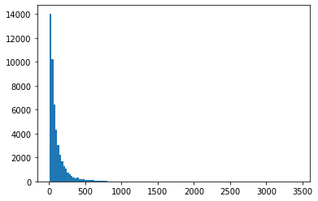
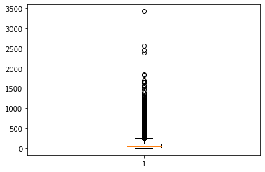
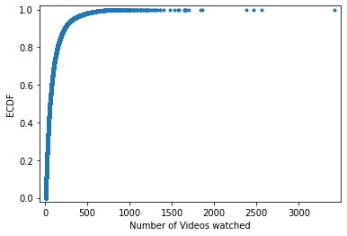

EduRec MOOCCube Course Recommender¶
Disentangled Self-Supervision for Recommending Videos in MOOCs (Code using PyTorch). Finding best MOOC course for students based on the past activity.
Setup¶
import os
import math
import copy
import tqdm
import random
import argparse
import numpy as np
import pandas as pd
import matplotlib.pyplot as plt
from scipy.sparse import csr_matrix
import torch
import torch.nn as nn
from torch.optim import Adam
from torch.utils.data import Dataset
from torch.utils.data import DataLoader, RandomSampler
Data Loading¶
mooccube_df = pd.read_parquet('https://github.com/recohut/reco-data/raw/mooccube/mooccube/v1/interactions_processed.parquet.gzip')
mooccube_df.head()
| id | video_ids | num_video_ids | |
|---|---|---|---|
| 0 | U_8126464 | 67,67,230,230,367,367,726,726,1353,1353,1683,1... | 187 |
| 1 | U_8650752 | 77,124,274,835,1396,1779,2177,2245,2706,3543,4... | 94 |
| 2 | U_131074 | 149,940,2374,3230,6485,6969,10793,10929,12714,... | 27 |
| 3 | U_262145 | 1017,3322,4217,4333,4566,4853,5204,5512,6614,6... | 43 |
| 4 | U_1441801 | 3494,3494,9388,9845,9845,10364,11164,13695,136... | 17 |
EDA¶

series_num_videos = mooccube_df['num_video_ids']
sum_num_videos = series_num_videos.sum()
avg_num_videos = series_num_videos.mean()
median_num_videos = series_num_videos.median()
first_quartile = series_num_videos.quantile(q=0.25)
third_quartile = series_num_videos.quantile(q=0.75)
max_num_videos = series_num_videos.max()
min_num_videos = series_num_videos.min()
num_students = mooccube_df.shape[0]
item_set = set()
for _, row in mooccube_df.iterrows():
items = row['video_ids'].split(',')
item_set = item_set | set(items)
num_uniq_videos = len(item_set)
print('Total number of students: {}'.format(num_students))
print('Number of unique videos watched: {}'.format(num_uniq_videos))
print('Number of videos watched: {}'.format(sum_num_videos))
print('Average number of videos watched: {}'.format(round(avg_num_videos, 2)))
print('Median number of videos watched: {}'.format(median_num_videos))
print('1st quartile number of videos watched: {}'.format(first_quartile))
print('3rd quartile of videos watched: {}'.format(third_quartile))
print('Maximum number of videos watched: {}'.format(max_num_videos))
print('Minimum number of videos watched: {}'.format(min_num_videos))
Total number of students: 48640
Number of unique videos watched: 34101
Number of videos watched: 4874298
Average number of videos watched: 100.21
Median number of videos watched: 59.0
1st quartile number of videos watched: 28.0
3rd quartile of videos watched: 123.0
Maximum number of videos watched: 3427
Minimum number of videos watched: 5
# plot histogram for number of videos watched amongst all students
plt.figure(0)
plt.hist(series_num_videos, bins=128)
plt.show()

# plot box plot for number of videos watched amongst all students
plt.figure(1)
plt.boxplot(series_num_videos)
plt.show()

# plot ecdf for number of videos watched amongst all students
x = np.sort(series_num_videos)
y = np.arange(1, len(x) + 1) / len(x)
plt.figure(2)
plt.plot(x, y, marker='.', linestyle='none')
plt.xlabel('Number of Videos watched')
plt.ylabel('ECDF')
plt.margins(0.02)
plt.show()

Utils¶
def set_seed(seed):
random.seed(seed)
os.environ['PYTHONHASHSEED'] = str(seed)
np.random.seed(seed)
torch.manual_seed(seed)
torch.cuda.manual_seed(seed)
torch.cuda.manual_seed_all(seed)
# some cudnn methods can be random even after fixing the seed
# unless you tell it to be deterministic
torch.backends.cudnn.deterministic = True
def check_path(path):
if not os.path.exists(path):
os.makedirs(path)
print(f'{path} created')
def neg_sample(item_set, item_size):
item = random.randint(1, item_size - 1)
while item in item_set:
item = random.randint(1, item_size - 1)
return item
class EarlyStopping:
"""Early stops the training if validation loss doesn't improve after a given patience."""
def __init__(self, checkpoint_path, patience=7, verbose=False, delta=0):
"""
Args:
patience (int): How long to wait after last time validation loss improved.
Default: 7
verbose (bool): If True, prints a message for each validation loss improvement.
Default: False
delta (float): Minimum change in the monitored quantity to qualify as an improvement.
Default: 0
"""
self.checkpoint_path = checkpoint_path
self.patience = patience
self.verbose = verbose
self.counter = 0
self.best_score = None
self.early_stop = False
self.delta = delta
def compare(self, score):
for i in range(len(score)):
if score[i] > self.best_score[i] + self.delta:
return False
return True
def __call__(self, score, model):
# score HIT@10 NDCG@10
if self.best_score is None:
self.best_score = score
self.score_min = np.array([0] * len(score))
self.save_checkpoint(score, model)
elif self.compare(score):
self.counter += 1
print(f'EarlyStopping counter: {self.counter} out of {self.patience}')
if self.counter >= self.patience:
self.early_stop = True
else:
self.best_score = score
self.save_checkpoint(score, model)
self.counter = 0
def save_checkpoint(self, score, model):
'''Saves model when validation loss decrease.'''
if self.verbose:
# ({self.score_min:.6f} --> {score:.6f})
print(f'Validation score increased. Saving model ...')
torch.save(model.state_dict(), self.checkpoint_path)
self.score_min = score
def generate_rating_matrix_valid(user_seq, num_users, num_items):
# three lists are used to construct sparse matrix
row = []
col = []
data = []
for user_id, item_list in enumerate(user_seq):
for item in item_list[:-2]: #
row.append(user_id)
col.append(item)
data.append(1)
row = np.array(row)
col = np.array(col)
data = np.array(data)
rating_matrix = csr_matrix((data, (row, col)), shape=(num_users, num_items))
return rating_matrix
def generate_rating_matrix_test(user_seq, num_users, num_items):
# three lists are used to construct sparse matrix
row = []
col = []
data = []
for user_id, item_list in enumerate(user_seq):
for item in item_list[:-1]: #
row.append(user_id)
col.append(item)
data.append(1)
row = np.array(row)
col = np.array(col)
data = np.array(data)
rating_matrix = csr_matrix((data, (row, col)), shape=(num_users, num_items))
return rating_matrix
def get_user_seqs_csv(data_file):
data_df = pd.read_csv(data_file)
user_seq = []
item_set = set()
user_set = set()
for _, row in data_df.iterrows():
items = row['video_ids'].split(',')
user_seq.append(items)
item_set = item_set | set(items)
user_set.add(row['id'])
num_users = len(user_set)
max_item = len(item_set)
num_items = max_item + 2
assert len(user_set) == len(user_seq)
valid_rating_matrix = generate_rating_matrix_valid(user_seq, num_users, num_items)
test_rating_matrix = generate_rating_matrix_test(user_seq, num_users, num_items)
return user_seq, max_item, valid_rating_matrix, test_rating_matrix
def get_user_seqs_long_csv(data_file):
"""
:param data_file:
:return:
user_seq:
list of item sequences
max_item:
item with largest item id (number of items basically)
"""
data_df = pd.read_csv(data_file)
user_seq = []
item_set = set()
user_set = set()
for idx, row in data_df.iterrows():
items = row['video_ids'].split(',')
items = [int(item) for item in items]
user_seq.append(items)
item_set = item_set | set(items)
user_set.add(row['id'])
max_item = len(item_set)
assert len(user_set) == len(user_seq)
return user_seq, max_item
def get_user_seqs_and_sample(data_file, sample_file):
data_df = pd.read_csv(data_file)
user_seq = []
item_set = set()
for _, row in data_df.iterrows():
items = row['video_ids'].split(',')
user_seq.append(items)
item_set = item_set | set(items)
max_item = len(item_set)
sample_df = pd.read_csv(sample_file)
sample_seq = []
for _, row in sample_df.iterrows():
items = row['video_ids'].split(',')
sample_seq.append(items)
item_set = item_set | set(items)
assert len(user_seq) == len(sample_seq)
return user_seq, max_item, sample_seq
def get_metric(pred_list, topk=10):
NDCG = 0.0
HIT = 0.0
MRR = 0.0
# [batch] the answer's rank
for rank in pred_list:
MRR += 1.0 / (rank + 1.0)
if rank < topk:
NDCG += 1.0 / np.log2(rank + 2.0)
HIT += 1.0
return HIT / len(pred_list), NDCG / len(pred_list), MRR / len(pred_list)
Metrics¶
def precision_at_k_per_sample(actual, predicted, topk):
num_hits = 0
for place in predicted:
if place in actual:
num_hits += 1
return num_hits / (topk + 0.0)
def precision_at_k(actual, predicted, topk):
sum_precision = 0.0
num_users = len(predicted)
for i in range(num_users):
act_set = set(actual[i])
pred_set = set(predicted[i][:topk])
sum_precision += len(act_set & pred_set) / float(topk)
return sum_precision / num_users
def recall_at_k(actual, predicted, topk):
sum_recall = 0.0
num_users = len(predicted)
true_users = 0
for i in range(num_users):
act_set = set(actual[i])
pred_set = set(predicted[i][:topk])
if len(act_set) != 0:
sum_recall += len(act_set & pred_set) / float(len(act_set))
true_users += 1
return sum_recall / true_users
def apk(actual, predicted, k=10):
"""
Computes the average precision at k.
This function computes the average precision at k between two lists of
items.
Parameters
----------
actual : list
A list of elements that are to be predicted (order doesn't matter)
predicted : list
A list of predicted elements (order does matter)
k : int, optional
The maximum number of predicted elements
Returns
-------
score : double
The average precision at k over the input lists
"""
if len(predicted) > k:
predicted = predicted[:k]
score = 0.0
num_hits = 0.0
for i, p in enumerate(predicted):
if p in actual and p not in predicted[:i]:
num_hits += 1.0
score += num_hits / (i + 1.0)
if not actual:
return 0.0
return score / min(len(actual), k)
def mapk(actual, predicted, k=10):
"""
Computes the mean average precision at k.
This function computes the mean average prescision at k between two lists
of lists of items.
Parameters
----------
actual : list
A list of lists of elements that are to be predicted
(order doesn't matter in the lists)
predicted : list
A list of lists of predicted elements
(order matters in the lists)
k : int, optional
The maximum number of predicted elements
Returns
-------
score : double
The mean average precision at k over the input lists
"""
return np.mean([apk(a, p, k) for a, p in zip(actual, predicted)])
def ndcg_k(actual, predicted, topk):
res = 0
for user_id in range(len(actual)):
k = min(topk, len(actual[user_id]))
idcg = idcg_k(k)
dcg_k = sum([int(predicted[user_id][j] in
set(actual[user_id])) / math.log(j + 2, 2) for j in range(topk)])
res += dcg_k / idcg
return res / float(len(actual))
# Calculates the ideal discounted cumulative gain at k
def idcg_k(k):
res = sum([1.0 / math.log(i + 2, 2) for i in range(k)])
if not res:
return 1.0
else:
return res
Pytorch Dataset¶
class PretrainDataset(Dataset):
def __init__(self, args, user_seq):
self.args = args
self.user_seq = user_seq
self.max_len = args.max_seq_length
self.part_sequence = []
self.split_sequence()
def split_sequence(self):
for seq in self.user_seq:
input_ids = seq[-(self.max_len + 2):-2] # keeping same as train set
for i in range(len(input_ids)):
self.part_sequence.append(input_ids[:(i+1) + 1])
def __len__(self):
return len(self.part_sequence)
def __getitem__(self, index):
"""
:param index:
:return:
"""
# (all possible sequences made using all possible subsets of sequences)
sequence = self.part_sequence[index] # pos_items
seq_len = len(sequence)
if seq_len == 2:
t = 1
else:
t = torch.randint(1, seq_len-1, (1,))
# input sub-sequence
inp_subseq = sequence[:t]
inp_pad_len = self.max_len - len(inp_subseq)
inp_pos_items = ([0] * inp_pad_len) + inp_subseq
inp_pos_items = inp_pos_items[-self.max_len:]
# label sub-sequence
label_subseq = sequence[t:]
label_pad_len = self.max_len - len(label_subseq)
label_pos_items = [0] * label_pad_len + label_subseq
label_pos_items = label_pos_items[-self.max_len:]
label_pos_items.reverse()
# next item
next_item = [sequence[t]]
assert len(inp_pos_items) == self.max_len
assert len(label_pos_items) == self.max_len
cur_tensors = (
torch.tensor(inp_pos_items, dtype=torch.long), # actual input sub-sequence of items
torch.tensor(label_pos_items, dtype=torch.long), # actual label sub-sequence of items
torch.tensor(next_item, dtype=torch.long) # item next to input sub-sequence of items
)
return cur_tensors
class FineTrainDataset(Dataset):
def __init__(self, args, user_seq, test_neg_items=None, data_type='train'):
self.args = args
self.user_seq = user_seq
self.test_neg_items = test_neg_items
self.data_type = data_type
self.max_len = args.max_seq_length
def __getitem__(self, index):
user_id = index
items = self.user_seq[index]
assert self.data_type in {"train", "valid", "test"}
# [0, 1, 2, 3, 4, 5, 6]
# train [0, 1, 2, 3]
# target [1, 2, 3, 4]
# valid [0, 1, 2, 3, 4]
# answer [5]
# test [0, 1, 2, 3, 4, 5]
# answer [6]
if self.data_type == "train":
input_ids = items[:-3]
target_pos = items[1:-2]
answer = [0] # no use
elif self.data_type == 'valid':
input_ids = items[:-2]
target_pos = items[1:-1]
answer = [items[-2]]
else:
input_ids = items[:-1]
target_pos = items[1:]
answer = [items[-1]]
target_neg = []
seq_set = set(items)
for _ in input_ids:
target_neg.append(neg_sample(seq_set, self.args.item_size))
pad_len = self.max_len - len(input_ids)
input_ids = [0] * pad_len + input_ids
target_pos = [0] * pad_len + target_pos
target_neg = [0] * pad_len + target_neg
input_ids = input_ids[-self.max_len:]
target_pos = target_pos[-self.max_len:]
target_neg = target_neg[-self.max_len:]
assert len(input_ids) == self.max_len
assert len(target_pos) == self.max_len
assert len(target_neg) == self.max_len
if self.test_neg_items is not None:
test_samples = self.test_neg_items[index]
cur_tensors = (
torch.tensor(user_id, dtype=torch.long), # user_id for testing
torch.tensor(input_ids, dtype=torch.long),
torch.tensor(target_pos, dtype=torch.long),
torch.tensor(target_neg, dtype=torch.long),
torch.tensor(answer, dtype=torch.long),
torch.tensor(test_samples, dtype=torch.long),
)
else:
cur_tensors = (
torch.tensor(user_id, dtype=torch.long), # user_id for testing
torch.tensor(input_ids, dtype=torch.long),
torch.tensor(target_pos, dtype=torch.long),
torch.tensor(target_neg, dtype=torch.long),
torch.tensor(answer, dtype=torch.long),
)
return cur_tensors
def __len__(self):
return len(self.user_seq)
Custom Pytorch Layers¶
class LayerNorm(nn.Module):
def __init__(self, hidden_size, eps=1e-12):
"""Construct a layernorm module in the TF style (epsilon inside the square root).
"""
super(LayerNorm, self).__init__()
self.weight = nn.Parameter(torch.ones(hidden_size))
self.bias = nn.Parameter(torch.zeros(hidden_size))
self.variance_epsilon = eps
def forward(self, x):
u = x.mean(-1, keepdim=True)
s = (x - u).pow(2).mean(-1, keepdim=True)
x = (x - u) / torch.sqrt(s + self.variance_epsilon)
return self.weight * x + self.bias
class Embeddings(nn.Module):
"""Construct the embeddings from item, position.
"""
def __init__(self, args):
super(Embeddings, self).__init__()
self.item_embeddings = nn.Embedding(args.item_size, args.hidden_size, padding_idx=0)
self.position_embeddings = nn.Embedding(args.max_seq_length, args.hidden_size)
self.LayerNorm = LayerNorm(args.hidden_size, eps=1e-12)
self.dropout = nn.Dropout(args.hidden_dropout_prob)
self.args = args
def forward(self, input_ids):
seq_length = input_ids.size(1)
position_ids = torch.arange(seq_length, dtype=torch.long, device=input_ids.device)
position_ids = position_ids.unsqueeze(0).expand_as(input_ids)
items_embeddings = self.item_embeddings(input_ids)
position_embeddings = self.position_embeddings(position_ids)
embeddings = items_embeddings + position_embeddings
embeddings = self.LayerNorm(embeddings)
embeddings = self.dropout(embeddings)
return embeddings
class SelfAttention(nn.Module):
def __init__(self, args):
super(SelfAttention, self).__init__()
if args.hidden_size % args.num_attention_heads != 0:
raise ValueError(
"The hidden size (%d) is not a multiple of the number of attention "
"heads (%d)" % (args.hidden_size, args.num_attention_heads))
self.num_attention_heads = args.num_attention_heads
self.attention_head_size = int(args.hidden_size / args.num_attention_heads)
self.all_head_size = self.num_attention_heads * self.attention_head_size
self.query = nn.Linear(args.hidden_size, self.all_head_size)
self.key = nn.Linear(args.hidden_size, self.all_head_size)
self.value = nn.Linear(args.hidden_size, self.all_head_size)
self.attn_dropout = nn.Dropout(args.attention_probs_dropout_prob)
self.dense = nn.Linear(args.hidden_size, args.hidden_size)
self.LayerNorm = LayerNorm(args.hidden_size, eps=1e-12)
self.out_dropout = nn.Dropout(args.hidden_dropout_prob)
def transpose_for_scores(self, x):
new_x_shape = x.size()[:-1] + (self.num_attention_heads, self.attention_head_size)
x = x.view(*new_x_shape)
return x.permute(0, 2, 1, 3)
def forward(self, input_tensor, attention_mask):
mixed_query_layer = self.query(input_tensor)
mixed_key_layer = self.key(input_tensor)
mixed_value_layer = self.value(input_tensor)
query_layer = self.transpose_for_scores(mixed_query_layer)
key_layer = self.transpose_for_scores(mixed_key_layer)
value_layer = self.transpose_for_scores(mixed_value_layer)
# Take the dot product between "query" and "key" to get the raw attention scores.
attention_scores = torch.matmul(query_layer, key_layer.transpose(-1, -2))
attention_scores = attention_scores / math.sqrt(self.attention_head_size)
# Apply the attention mask is (precomputed for all layers in BertModel forward() function)
# [batch_size heads seq_len seq_len] scores
# [batch_size 1 1 seq_len]
attention_scores = attention_scores + attention_mask
# Normalize the attention scores to probabilities.
attention_probs = nn.Softmax(dim=-1)(attention_scores)
# This is actually dropping out entire tokens to attend to, which might
# seem a bit unusual, but is taken from the original Transformer paper.
# Fixme
attention_probs = self.attn_dropout(attention_probs)
context_layer = torch.matmul(attention_probs, value_layer)
context_layer = context_layer.permute(0, 2, 1, 3).contiguous()
new_context_layer_shape = context_layer.size()[:-2] + (self.all_head_size,)
context_layer = context_layer.view(*new_context_layer_shape)
hidden_states = self.dense(context_layer)
hidden_states = self.out_dropout(hidden_states)
hidden_states = self.LayerNorm(hidden_states + input_tensor)
return hidden_states
class PointWiseFeedForward(nn.Module):
def __init__(self, args):
super(PointWiseFeedForward, self).__init__()
self.conv1d_1 = nn.Conv1d(args.hidden_size, args.hidden_size, kernel_size=(1,))
self.activation = nn.ReLU()
self.conv1d_2 = nn.Conv1d(args.hidden_size, args.hidden_size, kernel_size=(1,))
self.LayerNorm = LayerNorm(args.hidden_size, eps=1e-12)
self.dropout = nn.Dropout(args.hidden_dropout_prob)
def forward(self, input_tensor):
hidden_states = self.conv1d_1(input_tensor.transpose(1, 2))
hidden_states = hidden_states.transpose(1, 2)
hidden_states = self.activation(hidden_states)
hidden_states = self.conv1d_2(hidden_states.transpose(1, 2))
hidden_states = hidden_states.transpose(1, 2)
hidden_states = self.activation(hidden_states)
hidden_states = self.dropout(hidden_states)
hidden_states = self.LayerNorm(hidden_states + input_tensor)
return hidden_states
class Layer(nn.Module):
def __init__(self, args):
super(Layer, self).__init__()
self.attention = SelfAttention(args)
self.intermediate = PointWiseFeedForward(args)
def forward(self, hidden_states, attention_mask):
attention_output = self.attention(hidden_states, attention_mask)
intermediate_output = self.intermediate(attention_output)
return intermediate_output
class SASEncoder(nn.Module):
def __init__(self, args):
super(SASEncoder, self).__init__()
layer = Layer(args)
self.layer = nn.ModuleList([copy.deepcopy(layer)
for _ in range(args.num_hidden_layers)])
def forward(self, hidden_states, attention_mask, output_all_encoded_layers=True):
all_encoder_layers = []
for layer_module in self.layer:
hidden_states = layer_module(hidden_states, attention_mask)
if output_all_encoded_layers:
all_encoder_layers.append(hidden_states)
if not output_all_encoded_layers:
all_encoder_layers.append(hidden_states)
return all_encoder_layers
class BiasLayer(nn.Module):
def __init__(self, hidden_size, initializer):
super(BiasLayer, self).__init__()
if initializer == 'zeros':
self.bias = nn.Parameter(torch.zeros(hidden_size))
elif initializer == 'normal':
self.bias = nn.Parameter(torch.randn(hidden_size) * (1 / np.sqrt(hidden_size)))
def forward(self, x):
return x + self.bias
class DisentangledEncoder(nn.Module):
def __init__(self, args):
super(DisentangledEncoder, self).__init__()
self.sas_encoder = SASEncoder(args)
# prototypical intention vector for each intention
self.prototypes = nn.ParameterList([nn.Parameter(torch.zeros(args.hidden_size))
for _ in range(args.num_intents)])
self.layernorm1 = LayerNorm(args.hidden_size, eps=1e-12)
self.layernorm2 = LayerNorm(args.hidden_size, eps=1e-12)
self.layernorm3 = LayerNorm(args.hidden_size, eps=1e-12)
self.layernorm4 = LayerNorm(args.hidden_size, eps=1e-12)
self.layernorm5 = LayerNorm(args.hidden_size, eps=1e-12)
self.w = nn.Linear(args.hidden_size, args.hidden_size)
self.b_prime = BiasLayer(args.hidden_size, 'zeros')
# individual alpha for each position
self.alphas = nn.Parameter(torch.zeros(args.max_seq_length, args.hidden_size))
self.beta_input_seq = nn.Parameter(torch.randn(args.num_intents, args.hidden_size) *
(1 / np.sqrt(args.hidden_size)))
self.beta_label_seq = nn.Parameter(torch.randn(args.num_intents, args.hidden_size) *
(1 / np.sqrt(args.hidden_size)))
def intention_clustering(self, z):
"""
Method to measure how likely the primary intention at position i
is related with kth latent category
:param z:
:return:
"""
z = self.layernorm1(z)
hidden_size = z.shape[2]
exp_normalized_numerators = list()
i = 0
for prototype_k in self.prototypes:
prototype_k = self.layernorm2(prototype_k) # [D]
numerator = torch.matmul(z, prototype_k) # [B, S]
exp_normalized_numerator = torch.exp(numerator / np.sqrt(hidden_size)) # [B, S]
exp_normalized_numerators.append(numerator)
if i == 0:
denominator = exp_normalized_numerator
else:
denominator = torch.add(denominator, exp_normalized_numerator)
i = i + 1
all_attentions_p_k_i = [torch.div(k, denominator)
for k in exp_normalized_numerators] # [B, S] K times
all_attentions_p_k_i = torch.stack(all_attentions_p_k_i, -1) # [B, S, K]
return all_attentions_p_k_i
def intention_weighting(self, z):
"""
Method to measure how likely primary intention at position i
is important for predicting user's future intentions
:param z:
:return:
"""
hidden_size = z.shape[2]
keys_tilde_i = self.layernorm3(z + self.alphas) # [B, S, D]
keys_i = keys_tilde_i + torch.relu(self.w(keys_tilde_i)) # [B, S, D]
query = self.layernorm4(self.b_prime(self.alphas[-1, :] + (z[:, -1, :]))) # [B, D]
query = torch.unsqueeze(query, -1) # [B, D, 1]
numerators = torch.matmul(keys_i, query) # [B, S, 1]
exp_normalized_numerators = torch.exp(numerators / np.sqrt(hidden_size))
sum_exp_normalized_numerators = exp_normalized_numerators.sum(1).unsqueeze(-1) # [B, 1] to [B, 1, 1]
all_attentions_p_i = exp_normalized_numerators / sum_exp_normalized_numerators # [B, S, 1]
all_attentions_p_i = all_attentions_p_i.squeeze(-1) # [B, S]
return all_attentions_p_i
def intention_aggr(self, z, attention_weights_p_k_i, attention_weights_p_i, is_input_seq):
"""
Method to aggregate intentions collected at all positions according
to both kinds of attention weights
:param z:
:param attention_weights_p_k_i:
:param attention_weights_p_i:
:param is_input_seq:
:return:
"""
attention_weights_p_i = attention_weights_p_i.unsqueeze(-1) # [B, S, 1]
attention_weights = torch.mul(attention_weights_p_k_i, attention_weights_p_i) # [B, S, K]
attention_weights_transpose = attention_weights.transpose(1, 2) # [B, K, S]
if is_input_seq:
disentangled_encoding = self.beta_input_seq + torch.matmul(attention_weights_transpose, z)
else:
disentangled_encoding = self.beta_label_seq + torch.matmul(attention_weights_transpose, z)
disentangled_encoding = self.layernorm5(disentangled_encoding)
return disentangled_encoding # [K, D]
def forward(self, is_input_seq, hidden_states, attention_mask, output_all_encoded_layers=True):
z = self.sas_encoder(hidden_states, attention_mask, output_all_encoded_layers)[-1]
attention_weights_p_k_i = self.intention_clustering(z) # [B, S, K]
attention_weights_p_i = self.intention_weighting(z) # [B, S]
disentangled_encoding = self.intention_aggr(z,
attention_weights_p_k_i,
attention_weights_p_i,
is_input_seq)
return disentangled_encoding
EduRec Pytorch Model¶
class EduRecModel(nn.Module):
def __init__(self, args):
super(EduRecModel, self).__init__()
self.item_embeddings = nn.Embedding(args.item_size, args.hidden_size, padding_idx=0)
self.position_embeddings = nn.Embedding(args.max_seq_length, args.hidden_size)
self.sas_encoder = SASEncoder(args)
self.disentangled_encoder = DisentangledEncoder(args)
self.LayerNorm = LayerNorm(args.hidden_size, eps=1e-12)
self.dropout = nn.Dropout(args.hidden_dropout_prob)
self.args = args
self.criterion = nn.BCELoss(reduction='none')
self.apply(self.init_weights)
def seq2seqloss(self, inp_subseq_encodings, label_subseq_encodings):
product = torch.mul(inp_subseq_encodings, label_subseq_encodings)
normalized_dot_product = torch.sum(product, dim=-1) / np.sqrt(self.args.hidden_size)
numerator = torch.exp(normalized_dot_product)
seq2seq_loss_k = -torch.log2(numerator / torch.sum(numerator))
thresh = np.floor(self.args.lambda_ * self.args.pre_batch_size * self.args.num_intents)
conf_indicator = seq2seq_loss_k <= thresh
conf_seq2seq_loss_k = torch.mul(seq2seq_loss_k, conf_indicator)
seq2seq_loss = torch.sum(conf_seq2seq_loss_k)
return seq2seq_loss
def seq2itemloss(self, inp_subseq_encodings, next_item_emb):
next_item_emb = torch.transpose(next_item_emb, 1, 2)
dot_product = torch.matmul(inp_subseq_encodings, next_item_emb) # [B, K, 1]
exp_normalized_dot_product = torch.exp(dot_product / np.sqrt(self.args.hidden_size))
numerator = torch.max(exp_normalized_dot_product, dim=1)[0] # [B, 1]
seq2item_loss_k = -torch.log2(numerator / torch.sum(exp_normalized_dot_product)) # [B, 1]
seq2item_loss = torch.sum(seq2item_loss_k)
return seq2item_loss
def add_position_embedding(self, sequence):
seq_length = sequence.size(1)
position_ids = torch.arange(seq_length, dtype=torch.long, device=sequence.device)
position_ids = position_ids.unsqueeze(0).expand_as(sequence)
item_embeddings = self.item_embeddings(sequence)
position_embeddings = self.position_embeddings(position_ids)
sequence_emb = item_embeddings + position_embeddings
sequence_emb = self.LayerNorm(sequence_emb)
sequence_emb = self.dropout(sequence_emb)
return sequence_emb
def pretrain(self, inp_pos_items, label_pos_items, next_pos_item):
next_item_emb = self.item_embeddings(next_pos_item) # [B, 1, D]
# Encode masked sequence
inp_sequence_emb = self.add_position_embedding(inp_pos_items)
inp_sequence_mask = (inp_pos_items == 0).float() * -1e8
inp_sequence_mask = torch.unsqueeze(torch.unsqueeze(inp_sequence_mask, 1), 1)
label_sequence_emb = self.add_position_embedding(label_pos_items)
label_sequence_mask = (label_pos_items == 0).float() * -1e8
label_sequence_mask = torch.unsqueeze(torch.unsqueeze(label_sequence_mask, 1), 1)
inp_seq_encodings = self.disentangled_encoder(True,
inp_sequence_emb,
inp_sequence_mask,
output_all_encoded_layers=True)
label_seq_encodings = self.disentangled_encoder(False,
label_sequence_emb,
label_sequence_mask,
output_all_encoded_layers=True)
# seq2item loss
seq2item_loss = self.seq2itemloss(inp_seq_encodings, next_item_emb)
# seq2seq loss
seq2seq_loss = self.seq2seqloss(inp_seq_encodings, label_seq_encodings)
return seq2item_loss, seq2seq_loss
# Fine tune
# same as SASRec
def finetune(self, input_ids):
attention_mask = (input_ids > 0).long()
extended_attention_mask = attention_mask.unsqueeze(1).unsqueeze(2) # torch.int64
max_len = attention_mask.size(-1)
attn_shape = (1, max_len, max_len)
subsequent_mask = torch.triu(torch.ones(attn_shape), diagonal=1) # torch.uint8
subsequent_mask = (subsequent_mask == 0).unsqueeze(1)
subsequent_mask = subsequent_mask.long()
if self.args.cuda_condition:
subsequent_mask = subsequent_mask.cuda()
extended_attention_mask = extended_attention_mask * subsequent_mask
extended_attention_mask = extended_attention_mask.to(dtype=next(self.parameters()).dtype) # fp16 compatibility
extended_attention_mask = (1.0 - extended_attention_mask) * -10000.0
sequence_emb = self.add_position_embedding(input_ids)
item_encoded_layers = self.sas_encoder(sequence_emb,
extended_attention_mask,
output_all_encoded_layers=True)
sequence_output = item_encoded_layers[-1]
return sequence_output
def init_weights(self, module):
""" Initialize the weights.
"""
if isinstance(module, (nn.Linear, nn.Embedding)):
# Slightly different from the TF version which uses truncated_normal for initialization
# cf https://github.com/pytorch/pytorch/pull/5617
module.weight.data.normal_(mean=0.0, std=self.args.initializer_range)
elif isinstance(module, LayerNorm):
module.bias.data.zero_()
module.weight.data.fill_(1.0)
if isinstance(module, nn.Linear) and module.bias is not None:
module.bias.data.zero_()
Model Training¶
class Trainer:
def __init__(self, model, train_dataloader,
eval_dataloader,
test_dataloader, args):
self.args = args
self.cuda_condition = torch.cuda.is_available() and not self.args.no_cuda
self.device = torch.device("cuda" if self.cuda_condition else "cpu")
self.model = model
if self.cuda_condition:
self.model.cuda()
# Setting the train and test data loader
self.train_dataloader = train_dataloader
self.eval_dataloader = eval_dataloader
self.test_dataloader = test_dataloader
# self.data_name = self.args.data_name
betas = (self.args.adam_beta1, self.args.adam_beta2)
self.optim = Adam(self.model.parameters(), lr=self.args.lr, betas=betas, weight_decay=self.args.weight_decay)
print("Total Parameters:", sum([p.nelement() for p in self.model.parameters()]))
self.criterion = nn.BCELoss()
def train(self, epoch):
self.iteration(epoch, self.train_dataloader)
def valid(self, epoch, full_sort=False):
return self.iteration(epoch, self.eval_dataloader, full_sort, train=False)
def test(self, epoch, full_sort=False):
return self.iteration(epoch, self.test_dataloader, full_sort, train=False)
def iteration(self, epoch, dataloader, full_sort=False, train=True):
raise NotImplementedError
def get_sample_scores(self, epoch, pred_list):
pred_list = (-pred_list).argsort().argsort()[:, 0]
HIT_1, NDCG_1, MRR = get_metric(pred_list, 1)
HIT_5, NDCG_5, MRR = get_metric(pred_list, 5)
HIT_10, NDCG_10, MRR = get_metric(pred_list, 10)
post_fix = {
"Epoch": epoch,
"HIT@1": '{:.4f}'.format(HIT_1), "NDCG@1": '{:.4f}'.format(NDCG_1),
"HIT@5": '{:.4f}'.format(HIT_5), "NDCG@5": '{:.4f}'.format(NDCG_5),
"HIT@10": '{:.4f}'.format(HIT_10), "NDCG@10": '{:.4f}'.format(NDCG_10),
"MRR": '{:.4f}'.format(MRR),
}
print(post_fix)
with open(self.args.log_file, 'a') as f:
f.write(str(post_fix) + '\n')
return [HIT_1, NDCG_1, HIT_5, NDCG_5, HIT_10, NDCG_10, MRR], str(post_fix)
def get_full_sort_score(self, epoch, answers, pred_list):
recall, ndcg = [], []
for k in [5, 10, 15, 20]:
recall.append(recall_at_k(answers, pred_list, k))
ndcg.append(ndcg_k(answers, pred_list, k))
post_fix = {
"Epoch": epoch,
"HIT@5": '{:.4f}'.format(recall[0]), "NDCG@5": '{:.4f}'.format(ndcg[0]),
"HIT@10": '{:.4f}'.format(recall[1]), "NDCG@10": '{:.4f}'.format(ndcg[1]),
"HIT@20": '{:.4f}'.format(recall[3]), "NDCG@20": '{:.4f}'.format(ndcg[3])
}
print(post_fix)
with open(self.args.log_file, 'a') as f:
f.write(str(post_fix) + '\n')
return [recall[0], ndcg[0], recall[1], ndcg[1], recall[3], ndcg[3]], str(post_fix)
def save(self, file_name):
torch.save(self.model.cpu().state_dict(), file_name)
self.model.to(self.device)
def load(self, file_name):
self.model.load_state_dict(torch.load(file_name))
def cross_entropy(self, seq_out, pos_ids, neg_ids):
# [batch seq_len hidden_size]
pos_emb = self.model.item_embeddings(pos_ids)
neg_emb = self.model.item_embeddings(neg_ids)
# [batch*seq_len hidden_size]
pos = pos_emb.view(-1, pos_emb.size(2))
neg = neg_emb.view(-1, neg_emb.size(2))
seq_emb = seq_out.view(-1, self.args.hidden_size) # [batch*seq_len hidden_size]
pos_logits = torch.sum(pos * seq_emb, -1) # [batch*seq_len]
neg_logits = torch.sum(neg * seq_emb, -1)
istarget = (pos_ids > 0).view(pos_ids.size(0) * self.model.args.max_seq_length).float() # [batch*seq_len]
loss = torch.sum(
- torch.log(torch.sigmoid(pos_logits) + 1e-24) * istarget -
torch.log(1 - torch.sigmoid(neg_logits) + 1e-24) * istarget
) / torch.sum(istarget)
return loss
def predict_sample(self, seq_out, test_neg_sample):
# [batch 100 hidden_size]
test_item_emb = self.model.item_embeddings(test_neg_sample)
# [batch hidden_size]
test_logits = torch.bmm(test_item_emb, seq_out.unsqueeze(-1)).squeeze(-1) # [B 100]
return test_logits
def predict_full(self, seq_out):
# [item_num hidden_size]
test_item_emb = self.model.item_embeddings.weight
# [batch hidden_size ]
rating_pred = torch.matmul(seq_out, test_item_emb.transpose(0, 1))
return rating_pred
class PretrainTrainer(Trainer):
def __init__(self, model,
train_dataloader,
eval_dataloader,
test_dataloader, args):
super(PretrainTrainer, self).__init__(
model,
train_dataloader,
eval_dataloader,
test_dataloader, args
)
def pretrain(self, epoch, pretrain_dataloader):
desc = f'S2I-{self.args.s2i_weight}-' \
f'S2S-{self.args.s2s_weight}'
pretrain_data_iter = tqdm.tqdm(enumerate(pretrain_dataloader),
desc=f"{self.args.model_name}-{self.args.data_name} Epoch:{epoch}",
total=len(pretrain_dataloader),
bar_format="{l_bar}{r_bar}")
self.model.train()
seq2item_loss_avg = 0.0
seq2seq_loss_avg = 0.0
total_loss_avg = 0.0
for i, batch in pretrain_data_iter:
# 0. batch_data will be sent into the device(GPU or CPU)
batch = tuple(t.to(self.device) for t in batch)
inp_pos_items, label_pos_items, next_pos_item = batch
seq2item_loss, seq2seq_loss = self.model.pretrain(inp_pos_items, label_pos_items, next_pos_item)
joint_loss = self.args.s2i_weight * seq2item_loss + \
self.args.s2s_weight * seq2seq_loss
self.optim.zero_grad()
joint_loss.backward()
self.optim.step()
# print('seq2item loss', seq2item_loss.item())
# print('seq2seq loss', seq2seq_loss.item())
seq2item_loss_avg += seq2item_loss.item()
seq2seq_loss_avg += seq2seq_loss.item()
total_loss_avg += (seq2item_loss_avg + seq2seq_loss_avg)
num = len(pretrain_data_iter) * self.args.pre_batch_size
post_fix = {
"epoch": epoch,
"seq2item_loss_avg": '{:.4f}'.format(seq2item_loss_avg / num),
"seq2seq_loss_avg": '{:.4f}'.format(seq2seq_loss_avg / num),
"total_loss_avg": '{:.4f}'.format(total_loss_avg / num)
}
print(desc)
print(str(post_fix))
with open(self.args.log_file, 'a') as f:
f.write(str(desc) + '\n')
f.write(str(post_fix) + '\n')
class FinetuneTrainer(Trainer):
def __init__(self, model,
train_dataloader,
eval_dataloader,
test_dataloader, args):
super(FinetuneTrainer, self).__init__(
model,
train_dataloader,
eval_dataloader,
test_dataloader, args
)
def iteration(self, epoch, dataloader, full_sort=False, train=True):
str_code = "train" if train else "test"
# Setting the tqdm progress bar
rec_data_iter = tqdm.tqdm(enumerate(dataloader),
desc="Recommendation EP_%s:%d" % (str_code, epoch),
total=len(dataloader),
bar_format="{l_bar}{r_bar}")
if train:
self.model.train()
rec_avg_loss = 0.0
rec_cur_loss = 0.0
for i, batch in rec_data_iter:
# 0. batch_data will be sent into the device(GPU or CPU)
batch = tuple(t.to(self.device) for t in batch)
_, input_ids, target_pos, target_neg, _ = batch
# Binary cross_entropy
sequence_output = self.model.finetune(input_ids)
loss = self.cross_entropy(sequence_output, target_pos, target_neg)
self.optim.zero_grad()
loss.backward()
self.optim.step()
rec_avg_loss += loss.item()
rec_cur_loss = loss.item()
post_fix = {
"epoch": epoch,
"rec_avg_loss": '{:.4f}'.format(rec_avg_loss / len(rec_data_iter)),
"rec_cur_loss": '{:.4f}'.format(rec_cur_loss),
}
if (epoch + 1) % self.args.log_freq == 0:
print(str(post_fix))
with open(self.args.log_file, 'a') as f:
f.write(str(post_fix) + '\n')
else:
self.model.eval()
pred_list = None
if full_sort:
answer_list = None
for i, batch in rec_data_iter:
# 0. batch_data will be sent into the device(GPU or cpu)
batch = tuple(t.to(self.device) for t in batch)
user_ids, input_ids, target_pos, target_neg, answers = batch
recommend_output = self.model.finetune(input_ids)
recommend_output = recommend_output[:, -1, :]
rating_pred = self.predict_full(recommend_output)
rating_pred = rating_pred.cpu().data.numpy().copy()
batch_user_index = user_ids.cpu().numpy()
rating_pred[self.args.train_matrix[batch_user_index].toarray() > 0] = 0
# reference: https://stackoverflow.com/a/23734295, https://stackoverflow.com/a/20104162
ind = np.argpartition(rating_pred, -20)[:, -20:]
arr_ind = rating_pred[np.arange(len(rating_pred))[:, None], ind]
arr_ind_argsort = np.argsort(arr_ind)[np.arange(len(rating_pred)), ::-1]
batch_pred_list = ind[np.arange(len(rating_pred))[:, None], arr_ind_argsort]
if i == 0:
pred_list = batch_pred_list
answer_list = answers.cpu().data.numpy()
else:
pred_list = np.append(pred_list, batch_pred_list, axis=0)
answer_list = np.append(answer_list, answers.cpu().data.numpy(), axis=0)
return self.get_full_sort_score(epoch, answer_list, pred_list)
else:
for i, batch in rec_data_iter:
# 0. batch_data will be sent into the device(GPU or cpu)
batch = tuple(t.to(self.device) for t in batch)
user_ids, input_ids, target_pos, target_neg, answers, sample_negs = batch
recommend_output = self.model.finetune(input_ids)
test_neg_items = torch.cat((answers, sample_negs), -1)
recommend_output = recommend_output[:, -1, :]
test_logits = self.predict_sample(recommend_output, test_neg_items)
test_logits = test_logits.cpu().detach().numpy().copy()
if i == 0:
pred_list = test_logits
else:
pred_list = np.append(pred_list, test_logits, axis=0)
return self.get_sample_scores(epoch, pred_list)
Start the Learning¶
Note: We are training only for 3 epochs just to validate the functionality as our focus is on undertanding the overall process of this type of modeling.
mooccube_df.to_csv('mooccube.csv', index=False)
def main():
parser = argparse.ArgumentParser()
parser.add_argument('--data_dir', default='.', type=str)
parser.add_argument('--plot_dir', default='plot', type=str)
parser.add_argument('--output_dir', default='output', type=str)
parser.add_argument('--data_name', default='mooccube', type=str)
# model args
parser.add_argument("--model_name", default='Pretrain', type=str)
parser.add_argument("--hidden_size", type=int, default=64, help="hidden size of transformer model")
parser.add_argument("--num_hidden_layers", type=int, default=2, help="number of layers")
parser.add_argument('--num_attention_heads', default=1, type=int)
parser.add_argument('--hidden_act', default="gelu", type=str) # gelu relu
parser.add_argument("--attention_probs_dropout_prob", type=float, default=0.5, help="attention dropout p")
parser.add_argument("--hidden_dropout_prob", type=float, default=0.5, help="hidden dropout p")
parser.add_argument("--initializer_range", type=float, default=0.02)
parser.add_argument('--max_seq_length', default=50, type=int)
parser.add_argument('--num_intents', default=4, type=int)
parser.add_argument('--lambda_', default=0.5, type=float)
# train args
parser.add_argument("--lr", type=float, default=0.001, help="learning rate of adam")
parser.add_argument("--batch_size", type=int, default=128, help="number of batch_size")
parser.add_argument("--epochs", type=int, default=200, help="number of epochs")
parser.add_argument("--no_cuda", action="store_true")
parser.add_argument("--log_freq", type=int, default=1, help="per epoch print res")
parser.add_argument("--seed", default=42, type=int)
# pre train args
parser.add_argument("--pre_epochs", type=int, default=300, help="number of pre_train epochs")
parser.add_argument("--pre_batch_size", type=int, default=100)
parser.add_argument('--ckp', default=20, type=int, help="pretrain epochs 10, 20, 30...")
parser.add_argument("--mask_p", type=float, default=0.2, help="mask probability")
parser.add_argument("--s2i_weight", type=float, default=1.0, help="seq2item loss weight")
parser.add_argument("--s2s_weight", type=float, default=1.0, help="seq2seq loss weight")
parser.add_argument("--weight_decay", type=float, default=0.0, help="weight_decay of adam")
parser.add_argument("--adam_beta1", type=float, default=0.9, help="adam first beta value")
parser.add_argument("--adam_beta2", type=float, default=0.999, help="adam second beta value")
parser.add_argument("--gpu_id", type=str, default="0", help="gpu_id")
args = parser.parse_args(args=[])
set_seed(args.seed)
check_path(args.output_dir)
os.environ["CUDA_VISIBLE_DEVICES"] = args.gpu_id
args.cuda_condition = torch.cuda.is_available() and not args.no_cuda
args.data_file = os.path.join(args.data_dir, args.data_name + '.csv')
user_seq, max_item = get_user_seqs_long_csv(args.data_file)
# args.ckp = 20
args_str = f'{args.model_name}-{args.data_name}-epochs-{args.ckp}'
checkpoint = args_str + '.pt'
args.checkpoint_path = os.path.join(args.output_dir, checkpoint)
args.item_size = max_item + 2
args.mask_id = max_item + 1
# save model args
args_str = f'{args.model_name}-{args.data_name}'
args.log_file = os.path.join(args.output_dir, args_str + '.txt')
print(args)
with open(args.log_file, 'a') as f:
f.write(str(args) + '\n')
model = EduRecModel(args=args)
trainer = PretrainTrainer(model, None, None, None, args)
# to resume training from last trained epoch
if os.path.exists(args.checkpoint_path):
trainer.load(args.checkpoint_path)
print(f'Resume training from epoch={args.ckp} for pre-training!')
init_epoch = int(args.ckp)
else:
init_epoch = -1
for epoch in range(args.pre_epochs):
if epoch <= init_epoch:
continue
pretrain_dataset = PretrainDataset(args, user_seq)
pretrain_sampler = RandomSampler(pretrain_dataset)
pretrain_dataloader = DataLoader(pretrain_dataset, sampler=pretrain_sampler, batch_size=args.pre_batch_size)
trainer.pretrain(epoch, pretrain_dataloader)
# if (epoch + 1) % 10 == 0:
ckp = f'{args.model_name}-{args.data_name}-epochs-{epoch+1}.pt'
checkpoint_path = os.path.join(args.output_dir, ckp)
trainer.save(checkpoint_path)
main()
Namespace(adam_beta1=0.9, adam_beta2=0.999, attention_probs_dropout_prob=0.5, batch_size=128, checkpoint_path='output/Pretrain-mooccube-epochs-20.pt', ckp=20, cuda_condition=True, data_dir='.', data_file='./mooccube.csv', data_name='mooccube', epochs=200, gpu_id='0', hidden_act='gelu', hidden_dropout_prob=0.5, hidden_size=64, initializer_range=0.02, item_size=34103, lambda_=0.5, log_file='output/Pretrain-mooccube.txt', log_freq=1, lr=0.001, mask_id=34102, mask_p=0.2, max_seq_length=50, model_name='Pretrain', no_cuda=False, num_attention_heads=1, num_hidden_layers=2, num_intents=4, output_dir='output', plot_dir='plot', pre_batch_size=100, pre_epochs=300, s2i_weight=1.0, s2s_weight=1.0, seed=42, weight_decay=0.0)
Total Parameters: 2295616
Pretrain-mooccube Epoch:0: 100%|| 18708/18708 [09:38<00:00, 32.35it/s]
S2I-1.0-S2S-1.0
{'epoch': 0, 'seq2item_loss_avg': '6.8654', 'seq2seq_loss_avg': '34.5771', 'total_loss_avg': '389116.3282'}
Pretrain-mooccube Epoch:1: 100%|| 18708/18708 [09:43<00:00, 32.07it/s]
S2I-1.0-S2S-1.0
{'epoch': 1, 'seq2item_loss_avg': '6.6616', 'seq2seq_loss_avg': '34.5748', 'total_loss_avg': '385779.0027'}
Pretrain-mooccube Epoch:2: 100%|| 18708/18708 [09:50<00:00, 31.69it/s]
S2I-1.0-S2S-1.0
{'epoch': 2, 'seq2item_loss_avg': '6.6537', 'seq2seq_loss_avg': '34.5746', 'total_loss_avg': '385690.2441'}
Pretrain-mooccube Epoch:3: 31%|| 5715/18708 [02:58<06:41, 32.36it/s]